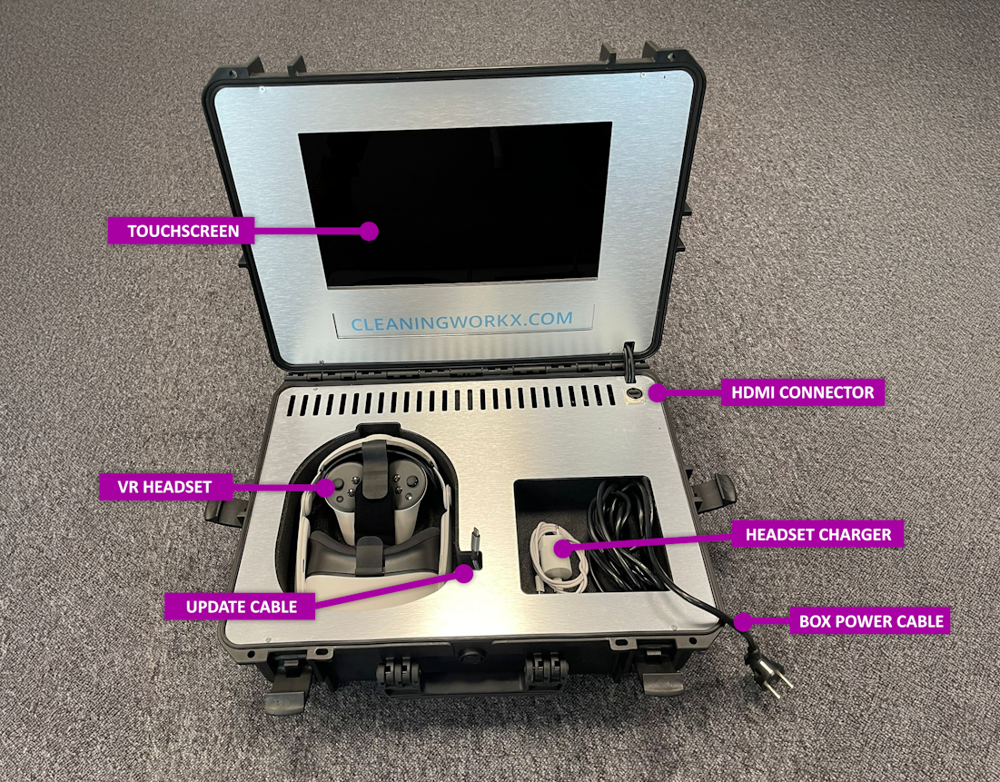
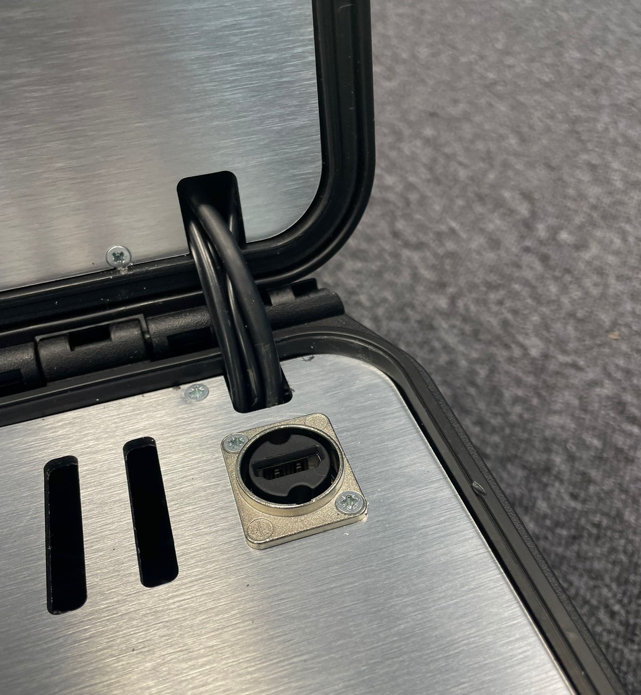
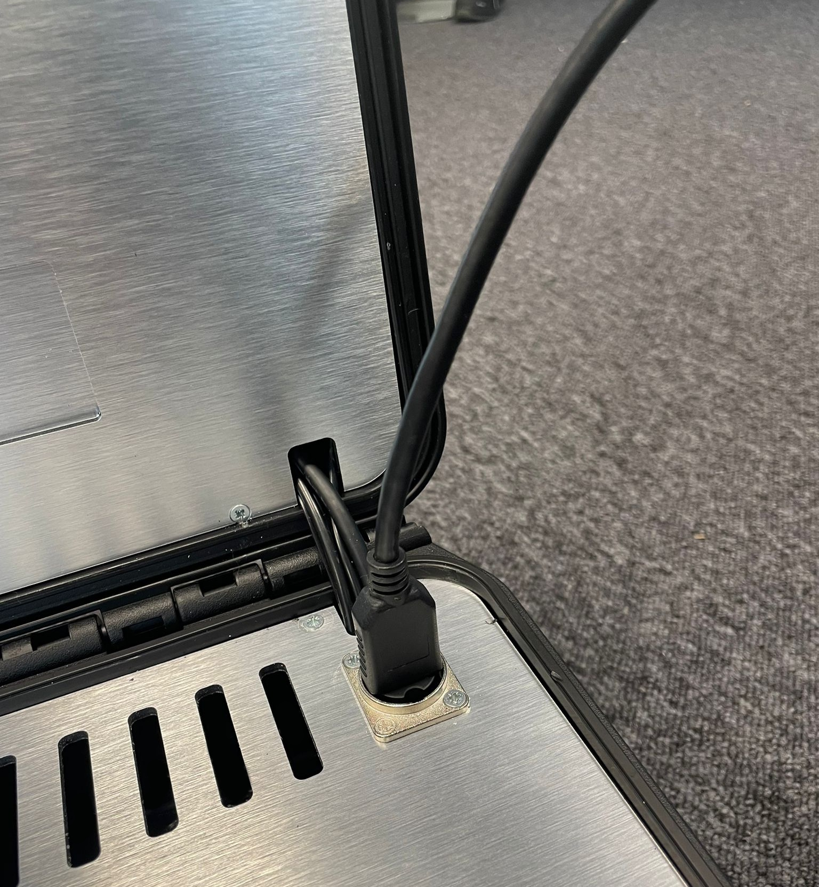
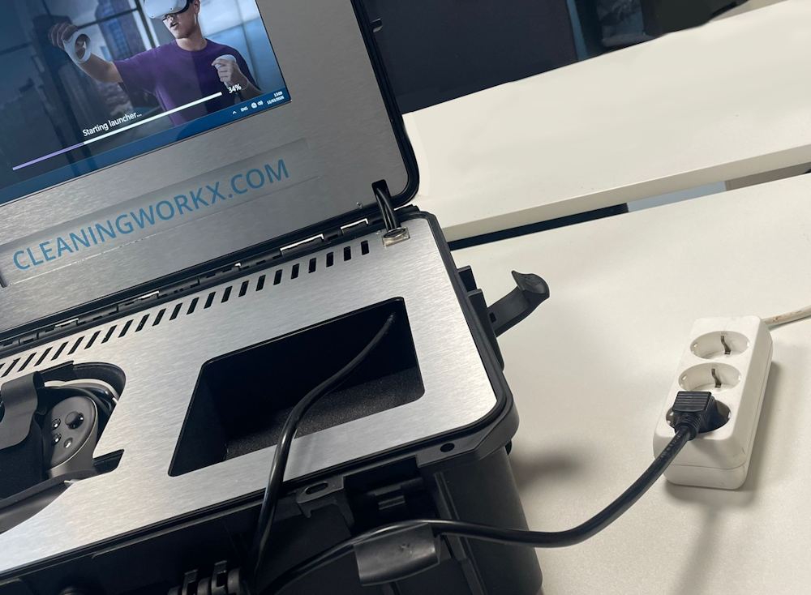

Contenu de la valise
Nos valises de formation contiennent tout le nécessaire pour mener et superviser une session de formation au nettoyage en VR. Avant de commencer la formation, il est important de savoir quels éléments se trouvent dans la valise de formation VR.
Vous trouverez ci-dessous un aperçu de tous les éléments présents dans la valise.

Éléments visibles
Écran tactile
L'écran tactile intégré permet de piloter le système de la valise.
Il vous permet de lancer le logiciel de formation et d'utiliser l'interface du spectator pour suivre ce qui se passe dans le casque VR.
Casque VR
Le casque VR est utilisé par le stagiaire pour suivre la formation au nettoyage en réalité virtuelle.
Il offre un environnement de formation immersif et permet d'interagir avec les scénarios de formation.
Manettes
Les manettes permettent au stagiaire d'interagir avec les objets dans la formation VR.
Chaque manette est équipée d'une dragonne pour éviter de la faire tomber pendant l'utilisation.
Entrée HDMI
Vous pouvez brancher un écran externe sur l'entrée HDMI.
Les autres personnes présentes dans la pièce peuvent ainsi suivre la session de formation sur un plus grand écran.


Câble d'alimentation
Le câble d'alimentation fournit l'électricité au système.
Dès qu'il est branché sur une prise électrique, l'ordinateur et l'écran tactile de la valise démarrent automatiquement.

Éléments cachés
La valise contient également quelques éléments cachés à l'intérieur. Vous n'aurez jamais à vous en occuper, mais il est utile de savoir qu'ils existent.
Ordinateur intégré
La valise contient un ordinateur qui fait tourner le logiciel VR Spectator et gère la connexion avec le casque VR. Ce système permet aux formateurs de suivre et de piloter la session de formation.
Modem Wi-Fi
La valise contient un modem intégré. Ce modem fournit la connexion Internet nécessaire au fonctionnement du système.
Le modem utilise le réseau mobile : la valise doit donc être utilisée à un endroit où la couverture est suffisante.
S'il n'y a pas de connexion ou si la formation ne parvient pas à se connecter au casque, consultez la section de dépannage Dépannage – Pas de Wi-Fi.
Une fois ces éléments bien compris, il vous sera plus facile de suivre le reste des instructions d'installation.